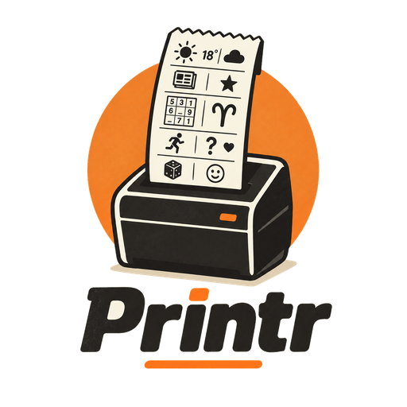
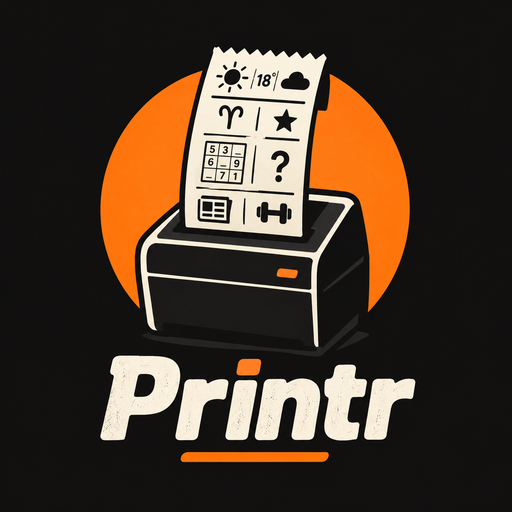
Printr transforme une imprimante à tickets en gadget familial. On compose son ticket avec la météo, un horoscope, un sudoku, une énigme ou les actualités, on l'imprime depuis son téléphone ou on le planifie pour 7 h 30… et on envoie une photo à ceux qui sont restés à la maison.
Printr turns a thermal receipt printer into a family gadget. Build a ticket from the weather, a horoscope, a sudoku, a riddle or the news, print it from your phone or schedule it for 7:30 am… and send a photo to whoever stayed home.
Météo, horoscope, agenda, liste de courses, sudoku, logimage, mots mêlés, coloriage, énigmes, bons à offrir, actualités, photos, QR codes…
Weather, horoscope, calendar, shopping list, sudoku, nonograms, word searches, coloring pages, riddles, gift coupons, news, photos, QR codes…
Chacun son compte, ses tickets enregistrés, et ceux qu'on partage. Aperçu en direct, pensée pour le téléphone.
Everyone gets an account, saved tickets, and shared ones. Live preview, designed for phones first.
« L'horoscope en semaine à 7 h 30 », « le brief du week-end à 9 h ». Pas de rattrapage à 14 h si l'imprimante dormait.
“Horoscope on weekdays at 7:30”, “weekend brief at 9:00”. No 2 pm catch-up if the printer was asleep.
Une photo prise avec le téléphone, un cœur dessiné, quelques mots : ça sort à la maison, tramé en noir et blanc.
A photo from your phone, a hand-drawn heart, a few words: it prints at home, dithered in black and white.
Presque tout est local et gratuit : RSS, énigmes, sudoku, mots mêlés, calendrier. Claude n'écrit que l'horoscope et le mot du jour, mis en cache pour la journée.
Almost everything is local and free: RSS, riddles, sudoku, word searches, calendar. Claude only writes the horoscope and the word of the day, cached for the day.
ESC/POS natif pour l'Epson TM-T88V, sur un Raspberry Pi. CLI soignée, serveur, planificateur et interface web dans le même exécutable.
Native ESC/POS for the Epson TM-T88V, on a Raspberry Pi. Polished CLI, server, scheduler and web app in one executable.
Ces images sont produites par l'émulateur de la TM-T88V, à partir des octets ESC/POS exacts envoyés à l'imprimante : 512 points de large, 180 dpi.
These images come from the TM-T88V emulator, fed with the exact ESC/POS bytes sent to the printer: 512 dots wide, 180 dpi.
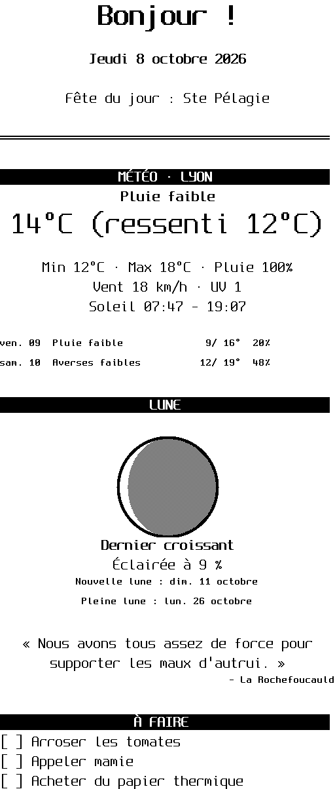
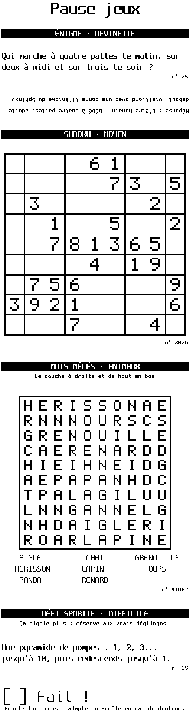
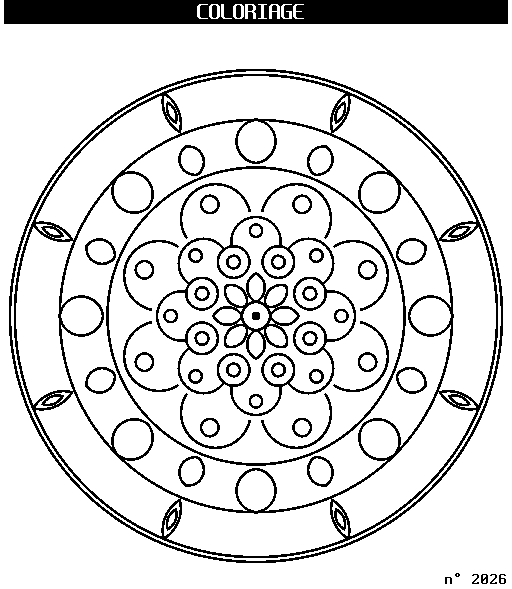
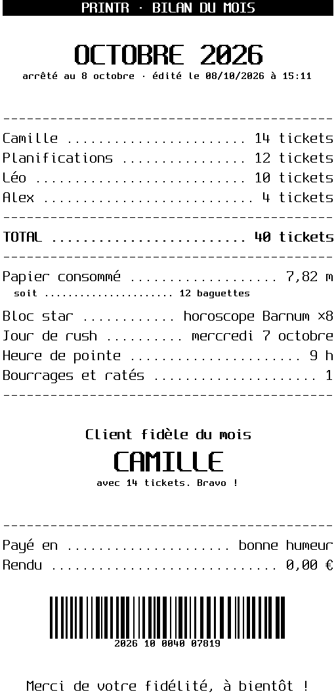
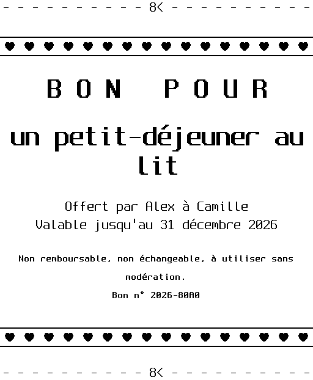
Rédigé chaque jour par Claude, sur un thème tiré au hasard pour ne jamais se répéter. Et pour un horoscope gratuit et hors ligne, calculé sur le vrai ciel, le bloc « Horoscope » s'appuie sur Barnum. Extraits authentiques des tons de Claude :
Written daily by Claude, on a random theme so it never repeats. For a free, offline horoscope computed from the real sky, the “Horoscope” block relies on Barnum. Genuine excerpts from Claude's tones (in French):
Les blocs entourés d'orange utilisent Claude Haiku : un petit appel payant par jour, mis en cache. Tout le reste est local ou passe par des API gratuites et sans clé (Open-Meteo, Wikipédia, CoinGecko).
Orange-outlined blocks use Claude Haiku: one small paid call per day, cached. Everything else is local or uses free, keyless APIs (Open-Meteo, Wikipedia, CoinGecko).
Chaque bloc se règle à la souris ou au doigt, et l'aperçu montre le ticket tel qu'il sortira. Les blocs Claude ne coûtent rien en aperçu : ils ne sont rédigés qu'à l'impression.
Tune every block with a mouse or a finger, and the preview shows the ticket exactly as it will print. Claude blocks cost nothing in preview: they are only written at print time.
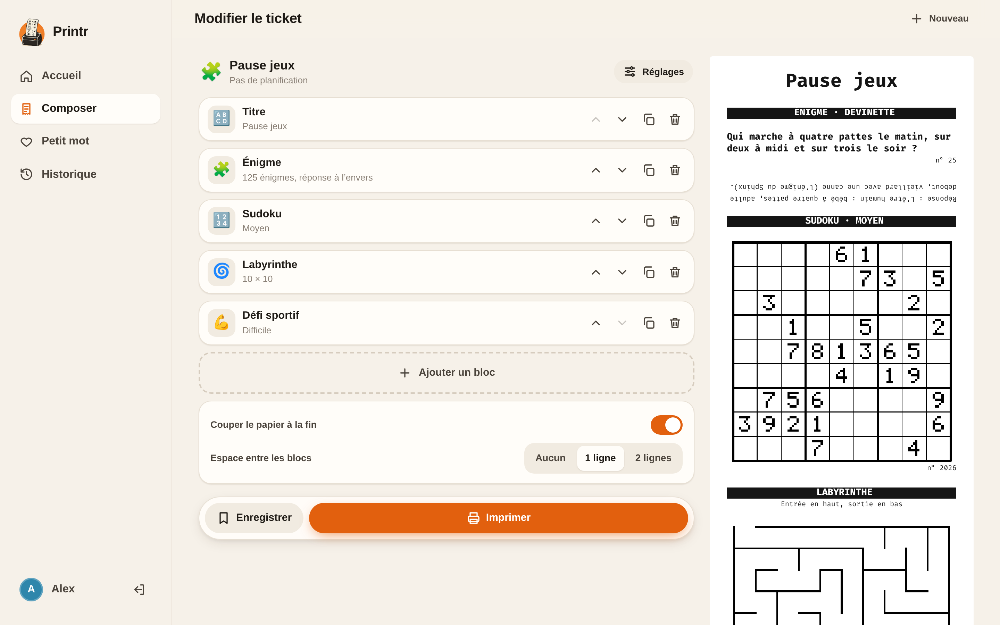
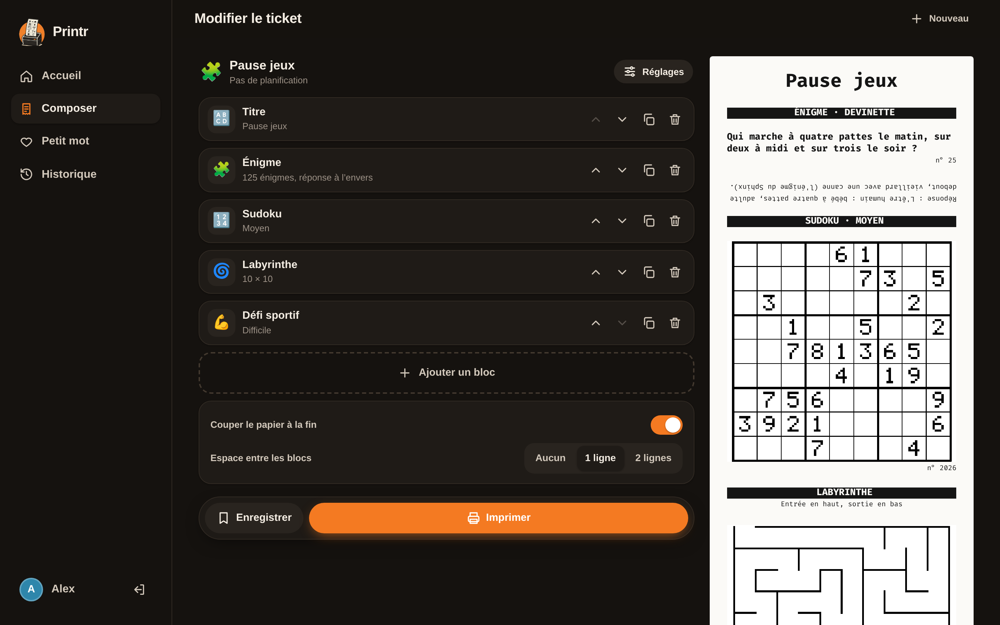
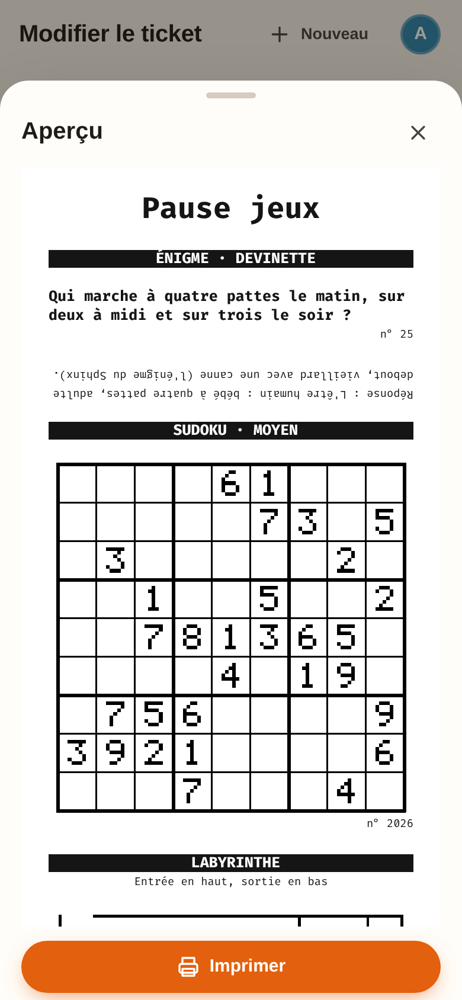
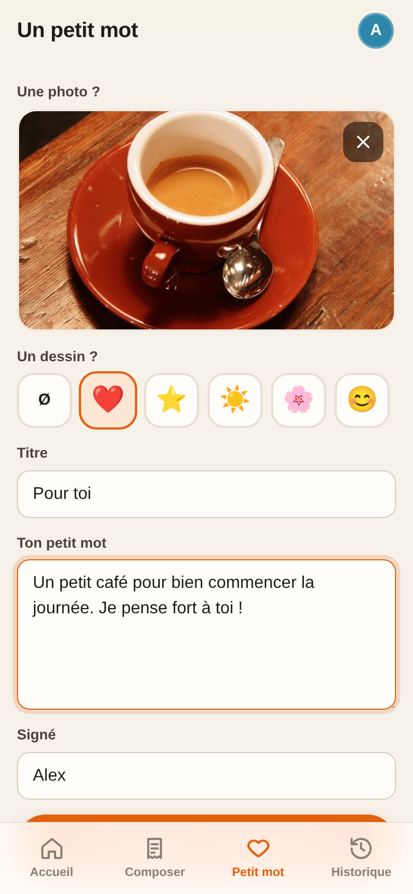
Une règle udev donne l'accès sans sudo et crée le lien /dev/tm88.
A udev rule grants access without sudo and creates the /dev/tm88 link.
sudo cp deploy/70-tm-t88v.rules /etc/udev/rules.d/ sudo udevadm control --reload && sudo udevadm trigger printr --device /dev/tm88 test
Un compte par personne, puis le service systemd fourni. La clé Claude est optionnelle.
One account per person, then the bundled systemd unit. The Claude key is optional.
sudo PRINTR_DATA_DIR=/var/lib/printr printr user add Camille sudo cp deploy/printr.service /etc/systemd/system/ sudo cp deploy/printr.env.example /etc/printr.env # ANTHROPIC_API_KEY… sudo systemctl enable --now printr # http://raspberrypi:8080